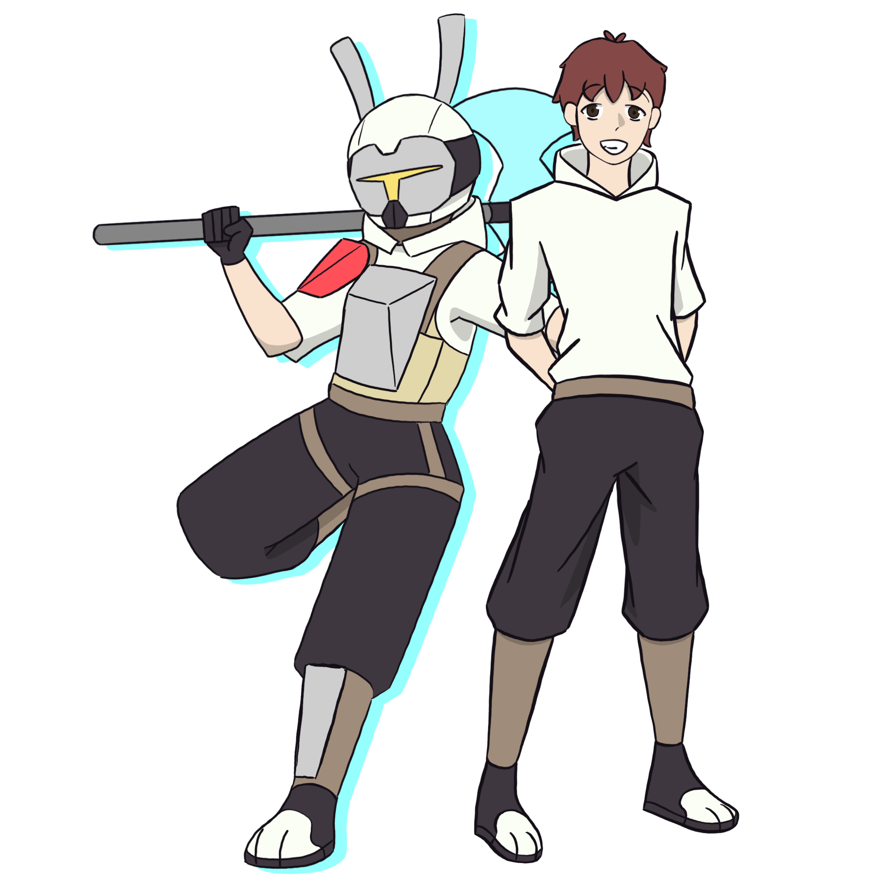
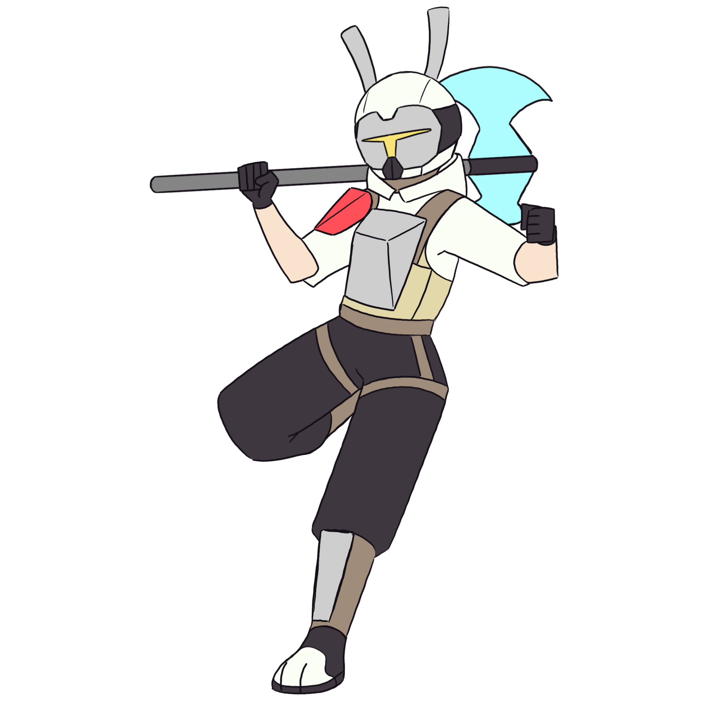
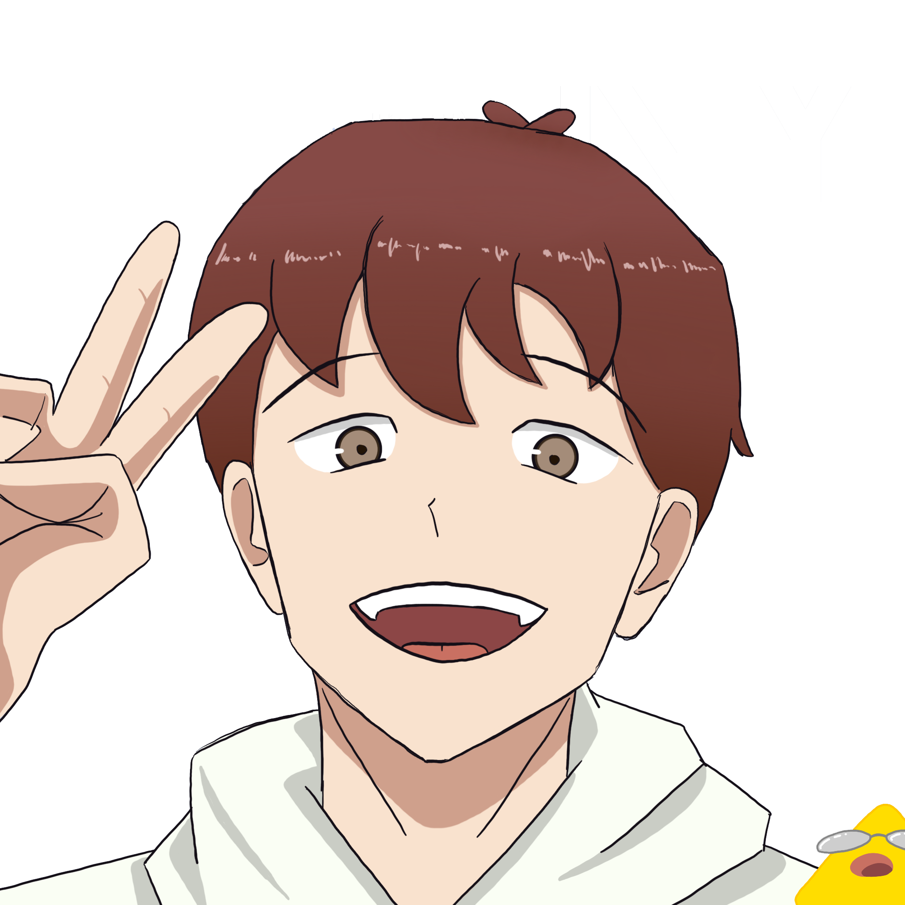
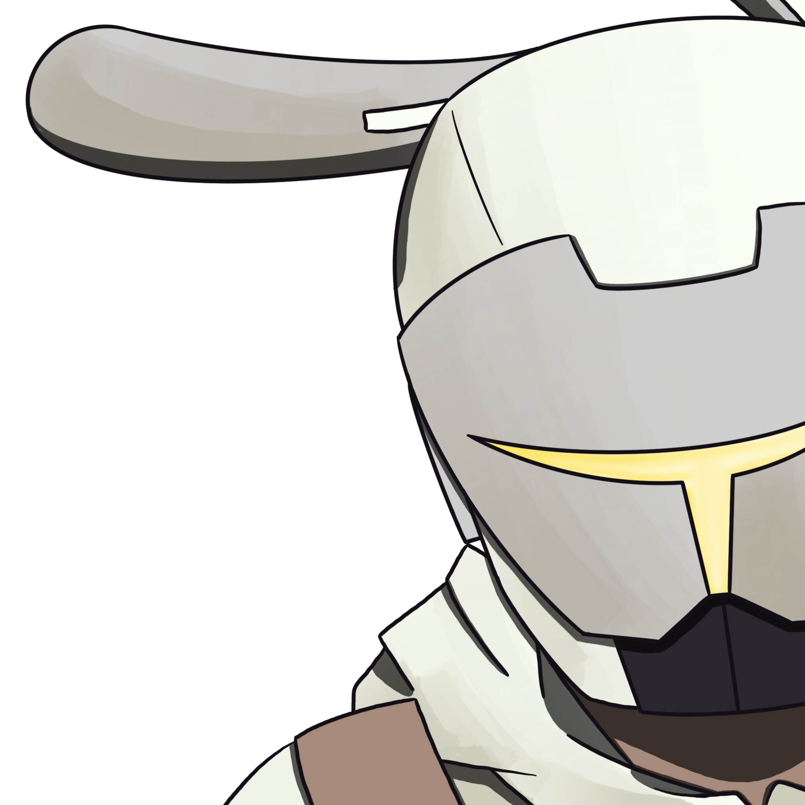

Tyler Gardner is a young recruit for the ARC, known for his youthful energy and love for trendy pop songs and video games. While inexperienced, Tyler shows great potential as both a mechanic and a fighter, making him a valuable asset to the ARC.


Tyler started in the ARC as a mechanic, using his bunny skills to excel at repairs in tight or elevated spaces. Determined to become a fighter, he trained hard and eventually earned his place on the field. His first mission alongside Cheetah turned out to be much larger than expected, uncovering secrets far beyond their initial goal.
Tyler’s innocent and upbeat demeanor contrasts with the serious nature of his role. His positivity and dedication to self-improvement make him a dependable teammate, even when his inexperience holds him back.

